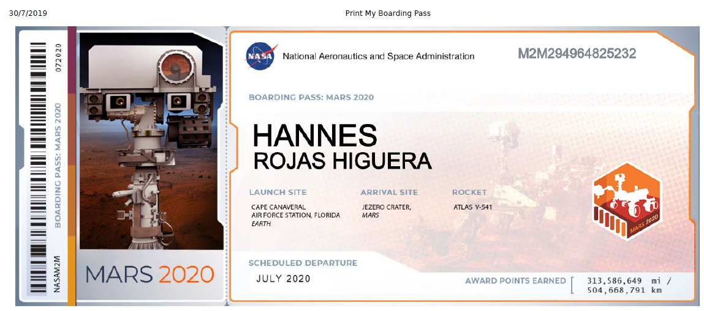

Lanzamiento 20 de Julio 2020 Cohete Atlas V-541 Nave Orion
construido por Lockheed Martin y Boeing.

Mi Bording Pass para el planeta Rojo
Lauch
Complejo de Lanzamiento Espacial 41 en la Estacion de la Fuerza Aerea de Cabo Canaveral en Florida
Mi Bording Pass para el planeta Rojo
Lauch
Complejo de Lanzamiento Espacial 41 en la Estacion de la Fuerza Aerea de Cabo Canaveral en Florida

Mi Bording Pass para el planeta Rojo
Cruise/Approach
De 8 a 9 meses de viaje

Mi Bording Pass para el planeta Rojo
Entry, Descent & Landing
Sobrevivir al llamado 7 minutos del horror que implica su descenso a la superficie

La imagen de satalite de Jezero muestra una fuerte evidencia de la presencia pasada de un lago y un delta.
Surface Mision
El principal objetivo de la mision sera encontrar signos de antigua habitabilidad en el planeta Marte en el pasado remoto

El mensaje codificado en los rayos del sol es: ′′ Si se encuentra, por favor, regresa al gran planeta de la izquierda.
Un total de 10.932.295 nombres fueron grabados en un haz de electrones en tres chips de silicio del tamaño de una uña, junto con los ensayos de los 155 finalistas en el concurso "Ponle nombre al rover" de la NASA. Luego, los chips se unieron a una placa de aluminio en el rover Perseverance Mars de la NASA en el Centro Espacial Kennedy en Florida el 16 de marzo. Perseverance aterrizará en el cráter Jezero el 18 de febrero de 2021
Los tres chips comparten espacio en la placa anodizada con un gráfico grabado con láser que representa la Tierra y Marte unidos por la estrella que les da luz a ambos. Mientras conmemora el rover que conecta los dos mundos, la simple ilustración también rinde homenaje a la elegante línea de arte de las placas a bordo de la nave espacial Pioneer y los registros dorados llevados por los Voyagers 1 y 2. Fijado en el centro del travesaño de popa del rover, la placa será visible para las cámaras en el mástil de Perseverance, informa la NASA.

Desde la izquierda, la tierra, el sol y Marte. La Tierra y Marte podrían ser de tamaño proporcional. El sol no es. Las distancias de la Tierra y Marte del Sol también podrían ser proporcionales.